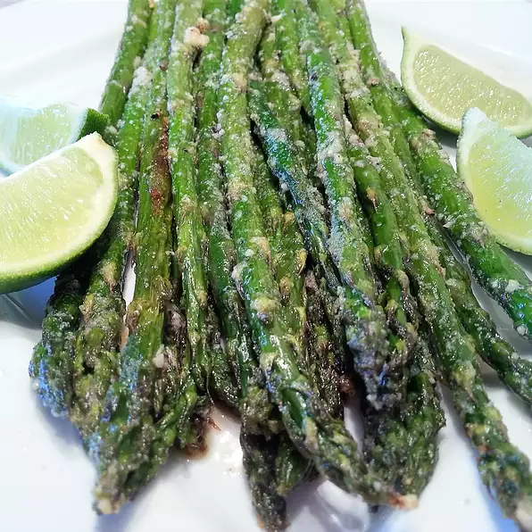

Asparagus

Oven-roasted Asparagus
Description
Salty and savory, the roasting method kills the natural bitterness of asparagus. Try it next to grilled fish or lamb.
Nutrition Facts
Per Serving:123 calories; protein 3.3g; carbohydrates 5.2g; fat 10.8g; cholesterol 1.7mg; sodium 471.4mg.
Ingredients
- 1 bunch thin asparagus spears, trimmed
- 3 tablespoons olive oil
- 1½ tablespoons grated Parmesan cheese (Optional)
- 1 clove garlic, minced (Optional)
- 1 teaspoon sea salt
- ½ teaspoon ground black pepper
- 1 tablespoon lemon juice (Optional
Steps
- Preheat an oven to 425 degrees F (220 degrees C).
- Place the asparagus into a mixing bowl, and drizzle with the olive oil. Toss to coat the spears, then sprinkle with Parmesan cheese, garlic, salt, and pepper. Arrange the asparagus onto a baking sheet in a single layer.
- Bake in the preheated oven until just tender, 12 to 15 minutes depending on thickness. Sprinkle with lemon juice just before serving.
Cook's Note
To remove woody ends, grab stalk of asparagus at either end and bend until it snaps. It will naturally snap where it starts to get tough.